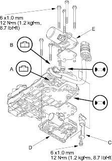
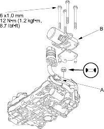

- Remove the lower valve body assembly (see page 14-321).
- Disconnect CVT speed change control valve assembly connector (A) and CVT start clutch pressure control valve assembly connector (B).

- Remove the solenoid harness clamp (C).
- Remove the seven bolts and remove the CVT speed change control valve assembly (D).
- Install the new valve assembly with the CVT start clutch pressure control valve assembly (E) (seven bolts). Replace the CVT start clutch pressure control valve assembly, when replacing the valve assemblies at a same time.
- Install the solenoid harness clamp and route the harness in it.
- Connect CVT speed change control valve assembly connector and CVT start clutch pressure control valve assembly connector, be sure to connect them correctly.
- Install the lower valve body assembly to the transmission (see page 14-322).
- Remove the lower valve body assembly (see page 14-321).
- Disconnect CVT start clutch pressure control valve assembly connector (A).

- Remove the four bolts and remove the CVT start clutch pressure control valve assembly (B).
- Install the new valve assembly (four bolts).
- Connect CVT start clutch pressure control valve assembly connector.
- Install the lower valve body assembly to the transmission (see page 14-322).